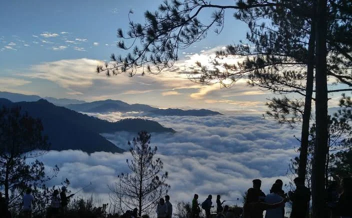
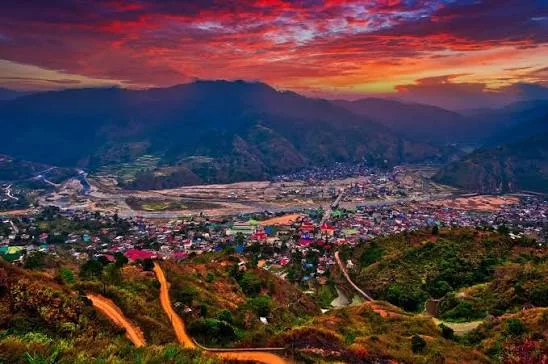
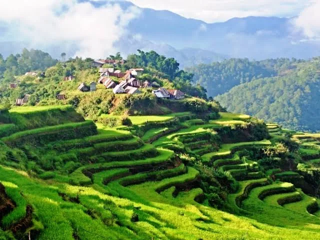
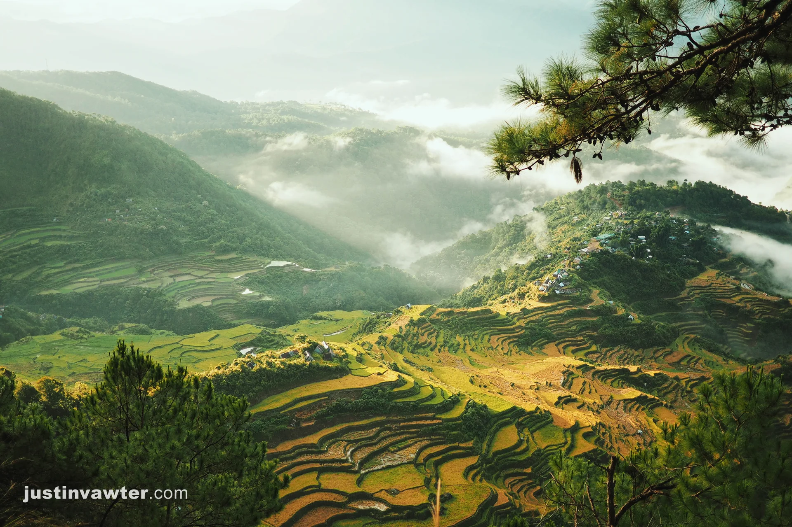
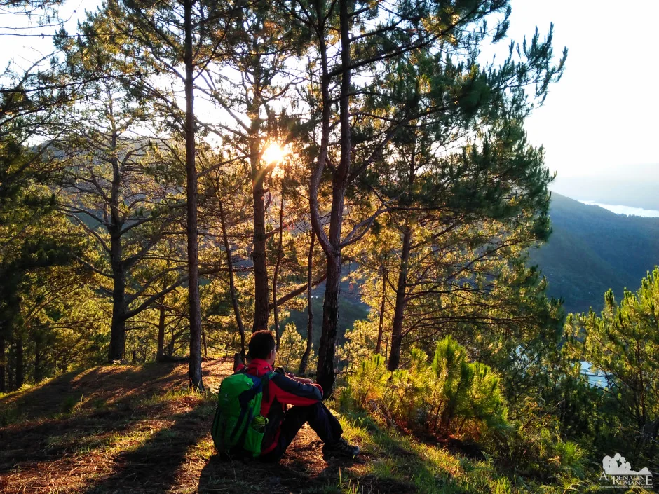
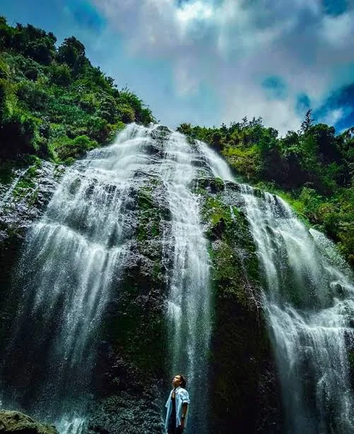

A journey into the Cordillera highlands
Discover Mountain Province.
Wake above the clouds. Follow centuries-old terraces. Meet a living culture shaped by land, memory, and mountain light.
The mountains are calling
Come for the view.
Stay for the story.
Mountain Province is not a checklist. It is the cold air before sunrise, the patient curve of a rice terrace, and stories carried from one generation to the next.
Travel slowly through its highland towns. Let local guides lead the way, learn the meaning behind what you see, and leave with more than photographs.
How to travel thoughtfullyFind your way
Places worth
slowing down for.

01Caves · cliffs · pine trails
Sagada
Walk between limestone caves, forest paths, cloud viewpoints, and sacred heritage sites with a local guide.

02History · craft · river valley
Bontoc
Begin with local history, then meet the markets, neighborhoods, and Chico River valley at an unhurried pace.

03Terraces · sunrise · village life
Maligcong
See stone-walled terraces catch first light, then spend a quiet morning learning how the landscape is cared for.

04Sunrise · summit · terrace views
Mt. Kupapey
Climb before dawn for a sweeping view of Maligcong's terraces, layered ridges, and villages waking beneath the clouds.

05Pines · ridges · longer trails
Mt. Fato
Follow pine-shaded paths to open ridges, often paired with Mt. Kupapey for a fuller guided mountain day.

06Waterfalls · farms · cool air
Bauko
Take the high road through working farms, pine ridges, and waterfall country shaped by mountain weather.
Move through the mountains
Choose your kind
of adventure.
Summit hiking
Mt. Fato and Mt. Kupapey
Sunrise walks
Cloud views and pine ridges
Waterfall trails
Weather-led highland walks
Terrace trekking
Guided walks on working land
Caves & forest
Accredited local guides required
Every route changes with weather, access, and community guidance. Match the activity to your experience and confirm conditions locally.
Make it yours
A journey that
moves at your pace.
Choose how much time you have. We will shape a gentle route with space for the roads, weather, and unplanned conversations in between.
Your route
Balanced
Three unhurried days
A starting point, not a fixed schedule. Confirm road, weather, guide, and site conditions locally.
Follow the rhythm
There is no wrong season.
Only a different story.
Cool & clear
January — February
Crisp dawns, long views, and layers after sunset.
Warm & bright
March — May
Sunny trail days and changing textures in the fields.
Green & misty
June — October
Lush mountains, soft fog, and weather-led itineraries.
Quiet & crisp
November — December
Cool evenings and an inviting, reflective pace.
Culture is living
Listen for what
the mountains carry.
Mountain Province is home to distinct Indigenous communities, languages, and ways of life. Gong rhythms, community dances, weaving, food, and oral history continue to carry identity and memory.
Encounter culture on community terms: listen before labeling, ask before recording, and remember that traditions are lived relationships—not performances created for a visitor's camera.
Gongs & dance
Collective rhythm brings movement, celebration, and community together.
Woven knowledge
Textiles carry skilled practice, identity, pattern, and meaning across generations.
Stories in context
Local museums and community guides help visitors understand what they encounter.
Travel with care
Be a welcome guest.
These landscapes are homes, farms, and sacred places before they are destinations. A thoughtful visit protects what makes them meaningful.
Go with local knowledge
Hire accredited local guides where required and follow community instructions.
Ask before you capture
Request permission before photographing people, rituals, homes, or sacred sites.
Keep the trail quiet
Carry waste out, stay on marked paths, and let the mountain sound like itself.
Let your visit stay local
Choose community stays, local food, crafts, transport, and guides when possible.